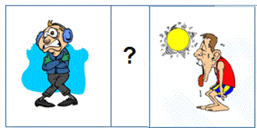
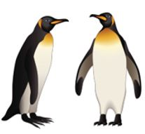
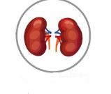
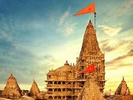
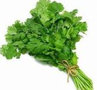

<!DOCTYPE html>
<html>
<head>
	<meta charset="UTF-8">
	<link href="../css/style_mock.css" rel="stylesheet" />
</head>
 <body>
<script type="text/javascript" src="../../mock_code.js"></script>
<script>

//todo - Read question from notepad
var questions = [
["Which season comes in between these two seasons <BR>","Summer","Winter","Spring","Rainy Season","C"],
["Identify the healthy and nutritious food from the following.","A","B","C","D","D"],
["Hat is used to protect which of the following part of your body?","Knee","Heart","Thumb","Head","D"],
["I am green colored bird. I eat green chilly. Who am I?","Parrot","Sparrow","Crow ","Pigeon","A"],
["The picture shows penguins. They have fat layer to adapt to the conditions in which they live.<BR> How does it help them ? <BR>","to swim better","to fly better","keeps them warm","to see better","C"],
["Choose the CORRECT option to replace the “?” in the given figure series. <BR>","1","3","4","5","C"],
["Which of the following is the living thing","Book","Plant","Ball","Table","B"],
["Living things need ____ to live","Food","Water","Air","All of Above","D"],
["Which of the following will die without food and water?","Teddy bear","Mango tree","Whale","Both (a) and (c)","D"],
["Which body is used to hear sound.","","","","","D"],
["Which of the following is used to comb hair","","","","","D"],
["Identify the organ in following figure - <BR>","Kidneys","Intestines","Liver","Brain","B"],
["Identify the organ in following figure - <BR>","Kidneys","Heart","Liver","Brain","A"],
["Following image is which type of building- <BR>","Church","Temple","Tomb","Gurudwara","B"],
["Which of these is not a pet animal","Cat","Tiger","Dog","Parrot","B"],
["________ is a complete food","Milk","Wheat","Water","Air","A"],
["Select junk food - ","Egg","Milk","Fruits","Pizza and Burger","D"],
["We _________ eat junk food.","should","should not","always","None","B"],
["We love eating fruits but  ","we must wash them before eating","we should wipe them before eating","we should not wash/wipe them before eating","None of the above","A"],
["Vehicles not drwan by animals ","Bullock-cart","Camel - cart","Tonga","Auto","D"],
["Which of the following is not a Air transport","Aeroplane","Helicopter","Glider","Train","D"],
["Which of the following is not a Water transport","Cargo ship","Boat","Ship","Train","D"],
["Select the odd one out","Cabbage","Spinach","Lettuce","Beetroot","D"],
["Which of the following is correct","Tomato and Onions are pulses","Banana and Apples are fruits","Kidney beans are pulses","Corns are cereals","B"],
["Following is an example of -  <BR>","Creepers","Climbers","Herbs","Shrubs","C"],
["We get below fruit from  -  <BR>","Creepers","Climbers","Herbs","Shrubs","B"],
["Which of the following is INCORRECT","We should cross roads though zebra crossing","We should not throw waste in dustbin","We should grow more plants","Sun is hot","B"],
["Which of the following is only one in the sky.","Stars","Clouds","Aeroplanes","Sun","D"],
["Sun rises in - ","East","West","South","North","A"],
["How many planets are there in the solar system","8","9","7","6","A"],
["Which if the following changes it's own shape everyday","Sun","Moon","Earth","None","B"],
["Rainbow commonly comes in which season","Autumn","Spring","Monsoon","Summer","C"],
["When moon is disappeared from the sky, it is called as - ","No Moon","Full Moon","New Moon","Crescent Moon","A"],
["Which of the following is correct - ","Sun gives light in night","Eat ice-creams in winter season","Snow fall happens in summer season","Wear cotton clothes in summer season","D"],

["Select the odd one out","Cauliflower","Sweet potato","Ginger","Potato","A"],


]

</script>
<table><tr>
  <td class="timer-pic"></td><td class="timer-text"><p id="demo" ></p></td> 
</tr>
</table>
<h2 id="test_status"></h2>
<div id="test"></div>
</body>
</html>
